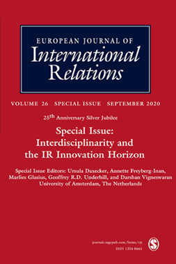
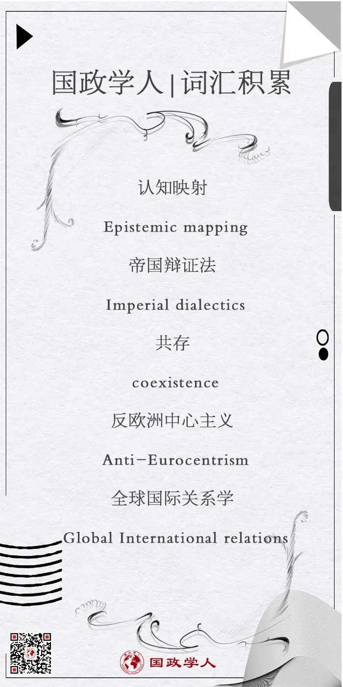

收录于合集

作品简介
【作者】 Christopher Murray，伦敦政治经济学院国际关系系博士候选人
【编译】 胡瑞琨（国政学人编译员，爱丁堡大学法学院国际法学硕士生）
【校对】 任潇依
【审核】 李源
【排版】 黄婷婷
【美编 】游钜家
【来源】 Murray C. Imperial dialectics and epistemic mapping: From decolonisation to anti-Eurocentric IR. European Journal of International Relations. 2020;26(2):419-442. doi:10.1177/1354066119873030
【归档】 《国际关系前沿》2021年第1期，总第28期。
期刊简介

European Journal of International Relations,《欧洲国际关系杂志》（EJIR）是欧洲政治研究联盟国际关系常设小组（the Standing Group on International Relations of the European Consortium for Political Research, SGIR）的同行评审旗舰期刊, 由SGIR和欧洲国际研究协会组成的联合委员会共同管理。根据Journal Citation Reports显示，2019年该期刊的影响因子为3.474。
帝国辩证法与认知映射： 从非殖民化到反欧洲中心主义的国际关系
Imperial dialectics and epistemic mapping: From decolonisation to anti- Eurocentric IR
Christopher Murray
内容提要
建立一个“后帝国”的学科而不是“后西方的”学科意味着什么？“后帝国”是指应对殖民帝国将世界划分为人类能力和思想的独立领域的问题。东西方或西方和非西方的二元类别是一种根据帝国假想划分世界的方式。这些划分为地方普遍主义和权力结构创造了理由。然而，许多反欧洲中心主义的学者现在利用这些类别来论证西方和非西方之间固定的认知差异。因此，本文通过利用20世纪与帝国进行斗争的两个思想家杜波伊斯（WEB Du Bois）和弗朗兹·法农（Frantz Fanon）的思想轨迹来批判世界的帝国分裂。杜波伊斯和法农都察觉到政治的民族和文化基础将如何重现帝国秩序，并因此为西方与非西方的本体论提供了潜在的替代方法。这包括认识到差异的代表是过程性的，由战略必要性决定，并且受制于在等级制度中代表差异的动机。本文以国际关系和其他学科的最新研究为基础，来思考知识生产帝国中的遗留问题，并推动更多的历史和关系方法在世界政治和社会探究中的运用。
01
简介
国际关系（IR）学界所展现的趋势是通过增加非西方的理念、实践与历史来修正学科的欧洲中心主义。作者认为这不是一种解决方案，而是问题的一个重要组成部分。非西方的范畴划分不仅为学科的全球性与知识生产权力的协调做出贡献，更为世界政治研究民族化提供了路径，再现了一种等级制的帝国意象，即基于民族与文化本质差异所构造的世界分裂形象。
反欧洲中心主义者们在批判中轻视了帝国在促进认同差异化中的生产性作用。这种差异化政治是精英的后殖民时代的专业知识和代表的基础。本文的基本主张是，增加非西方特征的民族或文化主义不会带来全球或后帝国的IR学科，而是将构建一个按帝国划分的世界，并支持地方普遍主义的从属权力主张。
本文针对西方与非西方叙事下的叙述话语提出了批判，并根据杜波伊斯和弗朗兹·法农的思想提出了两个概念：认知映射和帝国辩证法。
02
**
**
认知映射
19世纪末和20世纪反殖民主义话语的典型趋势是挪用并逆转西方精神上的丰富、艺术感性或价值观的根基。考虑到非西方人独特的历史、习俗、文化和知识传统，他们有可能比西方人做得更好，这些根基被用作批判帝国主义与排斥主义的合法化路径的强有力论据，而这将更深入地把西方和非西方种族、文化和历史特质联系起来。这种做法被称为是一种 认知映射 。
认知映射是一种代表性的实践，其思想是不同的理念、实践或思想体系具有单一的地理起源，可以根据一组特定的社会关系或具体体现的社会主体性进行编码。 在帝国后期的背景下，认知差异有时会被用来拒绝同化和排斥的政治，而认知映射则 将认知差异的特定表示进行制度化操作，以进行比较或批判。
将阿米塔夫·阿查亚（Amitav Acharya）与杜波伊斯的论点进行比较，可以发现这种帝国结构的连续性。杜波伊斯认为 不同的文明应该遵循自己特定的历史和文化发展路线，但他也认为，不同的文明都应该追求文明的世界性标准 。按照帝国种族发展的一种逻辑，黑人或非西方的种族和文化类别必须得到保留，直到它们所代表的人民可以做出重要的文明贡献。他反对欧洲帝国的暴力和剥削，但他也设想建立一个以现代文明水平为基础并由黑人精英指导的融合泛非的国家。同样的，阿查亚认为全球IR的目标是 归入，不是取代或者重构现有的国际关系理论与方法，而是应当结合区域，研究非西方的各种内容来增强其深度与广度。
03
帝国辩证法
法农提供了一种共存逻辑，即帝国在后期可以在 不破坏主从关系基本等级的情况下扩展形式平等和权利。在帝国背景下的承认不平等与差异并不一定意味着解放，而是可能以民族和文化包容的形式暗示帝国权力的扩展。 因此，法农的帝国辩证法对以下观点提出了质疑：同时兼容不同的差异意味着可以随意将其用于不同的策略。这是因为部署“自我和他人”表征有助于构建“自我和他人”的社会和政治现实，同时消除其他潜在影响。这在政治上是必然的，并且是高度模棱两可的，因此必须避免将它们作为学术知识加以具体化。
由于非西方文化在帝国的物质和社会等级制度中被征服，因此被欧洲殖民者削弱的群体动员是被殖民国家夺回政权的有力工具。但是，在将文化向外传播时，危险可能在于它会成为自我愚钝的喝彩，而不是朝着自身的转变目标前进。未能克服特定的特殊情况将意味着新独立的国家可能无法融入更大的统一阵线中，因此仍然容易受到新形式的殖民主义和分裂的影响。
民族的能力在这一条件下可能非常薄弱，无法作为可持续的革命政治形态的基础。 殖民主义并不一定会导致本地文化的消亡，而是有可能使其封锁在被殖民框架之中。 民族的统一能力达到了极限之后，会服从于新的国际政治环境的特殊性。在这一阶段，如果革命势头不能持续，新独立国家的统治阶级将简单地再现沙文主义和殖民政府的压迫性关系。
04
认知与共存逻辑
在IR中，反欧洲中心主义的学者在援引非西方内容常常重现了世界帝国的分裂。 在强调认知差异的本质主义争论中，反欧洲中心主义对于西方价值与设计的拒绝尽管有时在政治上似乎是必要的，但至少在短期之内，其作为知识的可靠性需要受到更严格的质疑。主流现实主义者把非西方国家的特征作为限制西方普遍主义扩张的极限，并认为这些非西方的内容并不能为西方理论下产生的组织与制度做出贡献，并被总结为一种文化例外论。同时，这种映射非常符合帝国秩序和精英代表的目的。它创造和服务了两个分化的世界，而不是根据分析性方法来建立议程并建设性地填补两者之间的鸿沟。
在共存逻辑下，反欧洲中心主义暗示了西方与非西方之间的根本对抗，但是这样做却过于简单与扁平。随之而来的便是必须采取步骤消除或净化嵌入西方特征的非西方特征。共存提供了一种互动的方式，并暗含着非西方文化对IR的贡献的路径逻辑。另外，共存的逻辑可以引发对不同观点扩散的开放式需求。然而，这些需求已从这些观点获得意义的社会历史环境中被剔除。因此，非西方可以成为认知多元化或制度策略的一种全球“选择和混合”，然而，这些差异性的观点由于缺乏互补的动力来评估这些观点产生及其是否会阻碍更公正的社会。
05
结论
本文认为，如果IR致力于成为一种“全球”学科，那么在学术本体论中有必要超越世界的西方与非西方的二元划分。学者们至少可以利用一套 平行的逻辑 来突破西方和非西方的本质主义表现形式。学科的全球化不是要促进民族化，而是要朝着不同的类别迈进。
译者评述
作者认为，在西方与非西方二分法的基础之下来提倡国际关系学的全球视角与对既有叙事的反思可能是不彻底的，甚至有可能在这种基础思维逻辑之下加深西方与非西方文化之间的鸿沟，将知识生产带入新的帝国陷阱。当前，在学科成立一百多年之后，全球国际关系学（GIR）成为IR领域的重要发展议程。GIR认同的前提即是国际关系的西方中心主义现状，这一根基并不能代表世界上其他不同国家和地区、不同阶级与文化的社会在交往过程中的于原理。因此，GIR鼓励非西方国际关系理论的发展，并建立在多元普遍主义与世界历史文化的基础上进行领域扩大。[1]中国的IR研究成果在发展过程中彰显出了独特的风格，为GIR的蓬勃发展贡献给了中国的哲学与文化逻辑。在利用中国智慧发展GIR的过程中，为了以防在发展过程中再次落入帝国逻辑之中，需要明确的是，国际关系理论是普世性的，没有国家属性与地域属性的。[2]根据本文作者所提供的建议，我们在研究中需要对于既有的叙事的本质有所警惕，在发展系统的具有新型国际关系理论过程中，跳出原有的思维惯性，至少是寻找一条相对平行的轨道来建立系统的IR理论。对于方法论、古代政治思想与现代IR体系的基础研究将会加快这一过程，加快GIR丰富的内容与成果的到来。[2]
参考文献
[1]秦亚青. 全球国际关系学与中国国际关系理论[J]. 国际观察, 2020(2).
[2]阎学通. 国际关系理论是普世性的[J]. 世界经济与政治, 2006(2):1-1.
词汇整理

文章观点不代表本平台观点，本平台评译分享的文章均出于专业学习之用, 不以任何盈利为目的，内容主要呈现对原文的介绍，原文内容请通过各高校购买的数据库自行下载。

国政学人
支持学术公益与知识传播
微信扫一扫赞赏作者 __赞赏
已喜欢，对作者说句悄悄话
取消 __
发送给作者
发送
最多40字，当前共字
上一页 1/3 下一页
长按二维码向我转账
支持学术公益与知识传播
受苹果公司新规定影响，微信 iOS 版的赞赏功能被关闭，可通过二维码转账支持公众号。